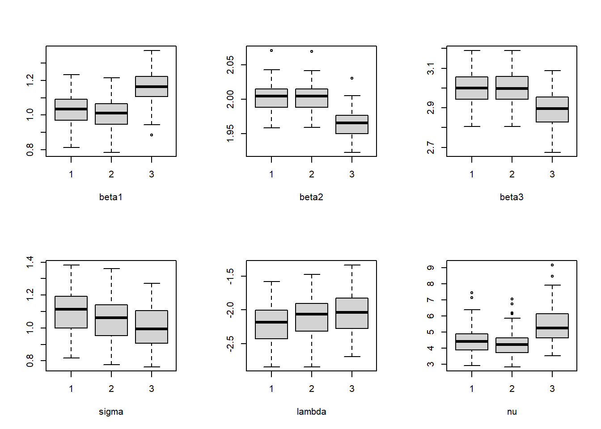
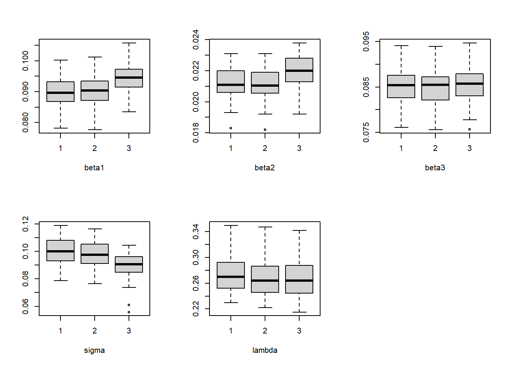

setwd("C:\\Users\\leejw\\Desktop\\RCH\\skewt-censored-master\\skewt-censored-master\\Diagnostics")
library(dplyr)
Attaching package: 'dplyr'The following objects are masked from 'package:stats':
filter, lagThe following objects are masked from 'package:base':
intersect, setdiff, setequal, unionlibrary(reshape2)Warning: package 'reshape2' was built under R version 4.3.2load("ST.results1_1000_0.05.RData")
load("ST.results2_1000_0.05.RData")
load("ST.results3_1000_0.05.RData")
rdata <- do.call(rbind, lapply((1:100), function(i){
rbind(data.frame(group=1, betas=rep(1:6),AVG=round(ST.results1[[i]][[1]],4), SD=append(round(ST.results1[[i]][[2]],4),"NaN"))
, data.frame(group=2, betas=rep(1:6),AVG=round(ST.results2[[i]][[1]],4), SD=append(round(ST.results2[[i]][[2]],4),"NaN"))
, data.frame(group=3, betas=rep(1:6),AVG=round(ST.result3[[i]][[1]],4), SD=append(round(ST.result3[[i]][[2]],4),"NaN")))}))
rdata$SD<-as.numeric(rdata$SD)
group_data <- rdata %>%
group_by(group, betas) %>%
summarize(Mean = mean(AVG, na.rm=TRUE), SD = mean(SD, na.rm=TRUE))`summarise()` has grouped output by 'group'. You can override using the
`.groups` argument.group_data <- data.frame(group_data)
dcast(group_data, betas~group, value.var=c("Mean")) betas 1 2 3
1 1 1.029292 1.010106 1.169250
2 2 2.002955 2.002847 1.963860
3 3 2.998887 2.998891 2.893219
4 4 1.102256 1.050910 1.004284
5 5 -2.215037 -2.111649 -2.053328
6 6 4.438885 4.274083 5.463100dcast(group_data, betas~group, value.var=c("SD")) betas 1 2 3
1 1 0.089889 0.090239 0.094499
2 2 0.021220 0.021155 0.021981
3 3 0.085189 0.084880 0.085672
4 4 0.100196 0.097703 0.090073
5 5 0.275909 0.270136 0.267302
6 6 NaN NaN NaN#boxplot(AVG~group+betas, data=rdata)
#boxplot(SD~group+betas, data=rdata)
beta1<- rdata %>% filter(betas==1)
beta2<- rdata %>% filter(betas==2)
beta3<- rdata %>% filter(betas==3)
beta4<- rdata %>% filter(betas==4)
beta5<- rdata %>% filter(betas==5)
beta6<- rdata %>% filter(betas==6)
par(mfrow=c(2,3))
boxplot(AVG~group, beta1, xlab="beta1", ylab="")
boxplot(AVG~group, beta2, xlab="beta2", ylab="")
boxplot(AVG~group, beta3, xlab="beta3", ylab="")
boxplot(AVG~group, beta4, xlab="sigma", ylab="")
boxplot(AVG~group, beta5, xlab="lambda", ylab="")
boxplot(AVG~group, beta6, xlab="nu", ylab="")
par(mfrow=c(2,3))
boxplot(SD~group, beta1, xlab="beta1", ylab="")
boxplot(SD~group, beta2, xlab="beta2", ylab="")
boxplot(SD~group, beta3, xlab="beta3", ylab="")
boxplot(SD~group, beta4, xlab="sigma", ylab="")
boxplot(SD~group, beta5, xlab="lambda", ylab="")